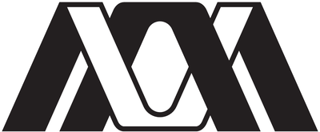

División de Ciencias Básicas e Ingeniería
Las diez licenciaturas, plan vigente contra plan modificado, con el programa de cada Unidad de Enseñanza Aprendizaje y sus cadenas de seriación.
Documento de trabajo · Expediente de julio de 2026
